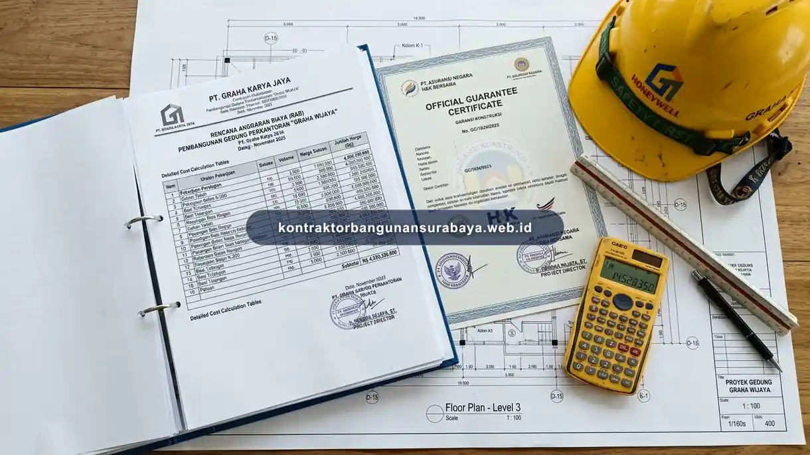

1. Apa Perbedaan Sistem Kontraktor Resmi dengan Tukang Biasa?
Perbedaan utama sistem kontraktor resmi dengan tukang harian terletak pada legalitas usaha, ketersediaan RAB tertulis yang akurat, serta jaminan garansi struktur setelah pekerjaan selesai, sementara tukang harian umumnya bekerja tanpa dokumen formal dan tanggung jawab jangka panjang tersebut. kontraktorbangunansurabaya.web.id menerapkan sistem kerja formal ini untuk memberi kepastian yang lebih besar kepada pemilik proyek di Surabaya.
Dalam membangun hunian impian maupun gedung komersial, memilih mitra pelaksana adalah keputusan paling krusial yang menentukan kualitas hasil akhir dan keamanan investasi finansial Anda. Memahami batasan peran antara sistem kerja profesional terorganisir dan tenaga kerja harian lepas membantu pemilik properti mengambil keputusan bijak sesuai kompleksitas proyek yang direncanakan pada pembangunan rumah baru.
Komitmen Transparansi Sistem Kontraktor
Sistem kontraktor mengedepankan akuntabilitas, dokumen kontrak tertulis (SPK), manajemen jadwal kurva-S, dan pengawasan teknis berlapis oleh insinyur sipil berpengalaman.
2. Aspek Legalitas dan Tanggung Jawab Hukum Kedua Sistem Kerja
Kontraktor resmi umumnya memiliki badan usaha dan Nomor Induk Berusaha (NIB) yang terdaftar, sehingga terikat tanggung jawab hukum yang jelas apabila terjadi wanprestasi atau sengketa terkait pekerjaan, berbeda dengan tukang harian yang bekerja secara perorangan tanpa badan usaha formal.
Perjanjian kerja tertulis (SPK) yang mengikat kedua belah pihak juga lebih umum diterapkan oleh kontraktor resmi, mencakup lingkup pekerjaan, jadwal, dan skema pembayaran, dibanding kesepakatan lisan yang lazim digunakan saat bekerja dengan tukang harian secara langsung. Ketiadaan SPK formal pada tukang harian sering kali memicu perselisihan jadwal molor dan penambahan ongkos yang tidak terkontrol pada proyek renovasi bangunan.
Aspek pertanggungan asuransi pekerja juga menjadi pembeda, karena kontraktor resmi umumnya mendaftarkan pekerjanya pada program jaminan sosial ketenagakerjaan, sementara tukang harian jarang memiliki perlindungan serupa, sehingga risiko kecelakaan kerja sepenuhnya ditanggung sendiri oleh pekerja yang bersangkutan.
| Parameter Pembanding | Kontraktor Resmi Berbadan Usaha | Tukang Harian / Mandor Lepas |
|---|---|---|
| Legalitas & Perizinan | Memiliki NIB, NPWP Usaha, dan izin operasional resmi | Perorangan non-badan usaha tanpa legalitas hukum |
| Perjanjian Kerja (SPK) | Dokumen kontrak tertulis berkekuatan hukum (materai) | Kesepakatan lisan tanpa klausul sanksi tertulis |
| Format RAB | Terperinci (volume m³, harga satuan, analisa SNI) | Estimasi gelondongan/kasar tanpa rincian spesifikasi |
| Jaminan Garansi | Sertifikat garansi struktur dan retensi pemeliharaan | Tidak ada jaminan resmi pasca tukang selesai bekerja |
| K3 & Asuransi Pekerja | Dilindungi BPJS Ketenagakerjaan & standar K3 | Tidak terasuransi, risiko kecelakaan kerja tinggi |
| Kesiapan Tenaga Kerja | Tersedia tim pengganti cadangan jika berhalangan | Proyek rawan berhenti jika tukang inti izin/sakit |
3. Perbedaan Akurasi RAB dan Skema Garansi Pekerjaan
RAB yang disusun kontraktor resmi umumnya lebih terperinci per item pekerjaan berdasarkan perhitungan volume dan harga satuan yang jelas, sementara tukang harian biasanya hanya memberikan perkiraan kasar berdasarkan pengalaman tanpa rincian tertulis yang dapat dipertanggungjawabkan.

Garansi struktur pasca pekerjaan selesai juga menjadi pembeda signifikan, karena kontraktor resmi umumnya bersedia memberikan jaminan tertulis atas hasil pekerjaan dalam periode tertentu, sementara tukang harian jarang memberikan jaminan serupa mengingat sifat kerjanya yang lebih informal.
Ketersediaan tim cadangan juga menjadi kelebihan kontraktor resmi, karena apabila salah satu pekerja berhalangan, kontraktor dapat menggantikan dengan tenaga lain tanpa menghentikan proyek, berbeda dengan tukang harian yang biasanya bekerja sendiri atau dalam kelompok kecil tanpa cadangan tenaga kerja.
Keunggulan Kontraktor Resmi
- Kepastian Spesifikasi: Material terikat merk dan standar SNI
- SLA Timeline: Jadwal kerja terpantau melalui Kurva-S
- Garansi Retensi: Perbaikan gratis selama masa garansi
- Tim Multidisiplin: Melibatkan arsitek, mandor, dan pengawas sipil
Karakteristik Tukang Harian
- Biaya Mengambang: Ongkos harian terus berjalan saat cuaca buruk
- Pengawasan Mandiri: Pemilik rumah wajib memantau setiap hari
- Tanpa Kontrak: Tidak ada konsekuensi hukum jika hasil tidak presisi
- Ketiadaan Desain DED: Mengandalkan perkiraan tanpa gambar kerja teknis
4. Kapan Sebaiknya Memilih Kontraktor Resmi Seperti kontraktorbangunansurabaya.web.id
Untuk pekerjaan berskala kecil dan sederhana, seperti perbaikan kecil rumah tangga, menggunakan jasa tukang harian mungkin masih cukup memadai, namun untuk proyek bangun baru, renovasi besar, atau bangunan komersial, penggunaan kontraktor resmi jauh lebih disarankan mengingat kompleksitas dan risiko yang lebih tinggi.
kontraktorbangunansurabaya.web.id menerapkan sistem kerja formal dengan RAB tertulis, SPK yang jelas, dan garansi struktur, sehingga pemilik proyek mendapatkan kepastian yang lebih besar dibanding mengandalkan tukang harian untuk proyek dengan skala dan risiko yang signifikan.
Meski biaya jasa kontraktor resmi umumnya lebih tinggi dibanding tukang harian, selisih biaya tersebut sebaiknya dilihat sebagai investasi terhadap kepastian kualitas, legalitas, dan jaminan jangka panjang, bukan semata-mata sebagai pengeluaran tambahan yang bisa dihindari.
Pelajari Panduan RAB Konstruksi
Kejelasan RAB menjadi salah satu pembeda utama yang telah dibahas di atas. Pelajari lebih lanjut mengenai strategi menyusun RAB konstruksi rumah agar Anda dapat menilai sendiri kualitas RAB yang diberikan oleh calon kontraktor.
5. FAQ Seputar Kontraktor Resmi vs Tukang Harian
6. Konsultasi Gratis Sekarang
Ingin berdiskusi lebih lanjut mengenai kebutuhan konstruksi bangunan Anda di Surabaya? Hubungi tim kami melalui WhatsApp untuk konsultasi awal tanpa biaya bersama kontraktorbangunansurabaya.web.id.
Konsultasi WhatsApp di 0889-8964-3555Tim Legalitas & Manajemen Kontraktor Bangunan Surabaya
Divisi Tata Kelola Kontrak, Legalitas Konstruksi & Estimasi Biaya. Berkomitmen menghadirkan transparansi RAB, kepatuhan izin PBG, dan jaminan garansi struktur resmi pada setiap proyek bangunan di Surabaya dan sekitarnya.